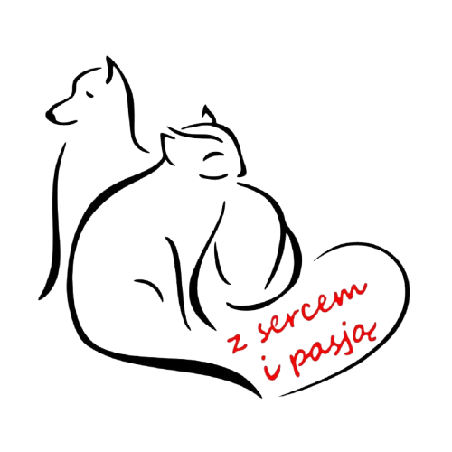

Badania ogólne
Przeglądy, konsultacje i diagnostyka, także badania krwi i USG na miejscu.

Przychodnia Weterynaryjna PasjoVetWeterynarz dla psów, kotów i małych zwierząt
Diagnostyka, leczenie i profilaktyka w jednym miejscu. Przyjmujemy z umówieniem i w nagłych przypadkach.
Najczęstsze potrzeby zwierząt w naszych gabinetach, bez odsyłania pacjenta po kolejnych badaniach.
Przeglądy, konsultacje i diagnostyka, także badania krwi i USG na miejscu.
Szczepienia obowiązkowe i zalecane, książeczka zdrowia oraz przypomnienia o terminach.
Sterylizacje, kastracje, usuwanie zmian skórnych i inne planowe operacje.
Wizyty interwencyjne w godzinach pracy. Zadzwoń, a przygotujemy się na przyjazd.
Mały zespół, który zna swoich pacjentów z imienia i prowadzi ich historię leczenia od szczeniaka do seniora.